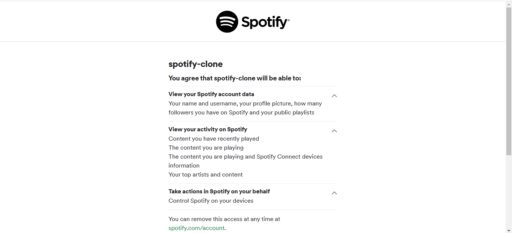
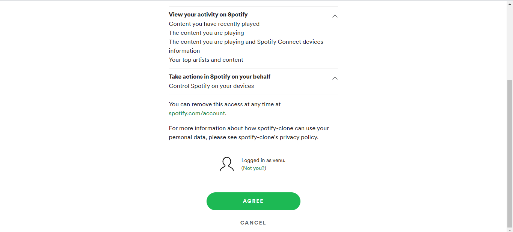

Spotify-Clone
I started this project in december 2020. Iam the single developer for this project.
This spotify_clone was developed by using HTML5/CSS3, JavaScript, ReactJS and spotify API.
This project used materialUI, Reacthooks and Authentication process for spotify login.
The spotify_clone was hosted on the local machine.
I worked on this project for 1 month.
GitHub Link: Spotify_Clone
Technologies:
- - HTML5/CSS3
- - JavaScript
- - React JS
- - MaterialUI
- - Spotify API
Results Fields:


Authentication for login spotify_clone